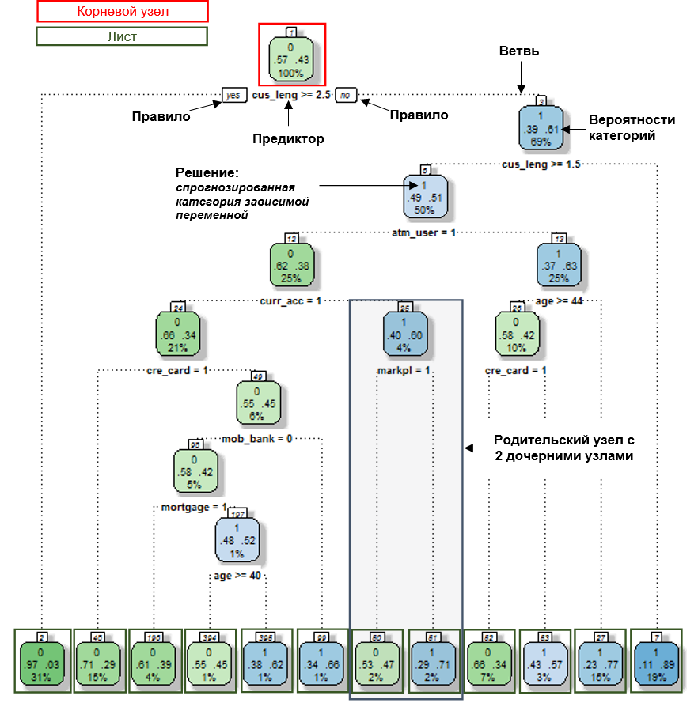
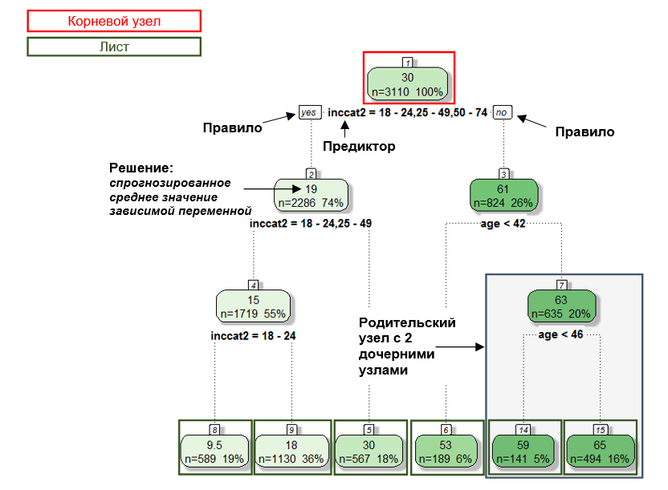
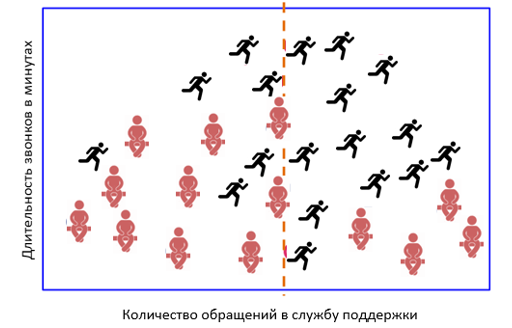
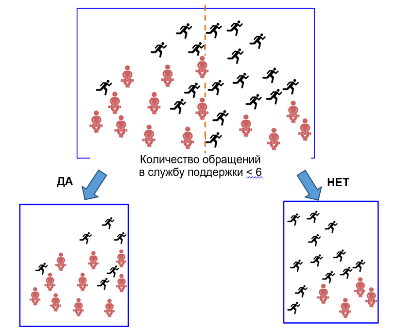
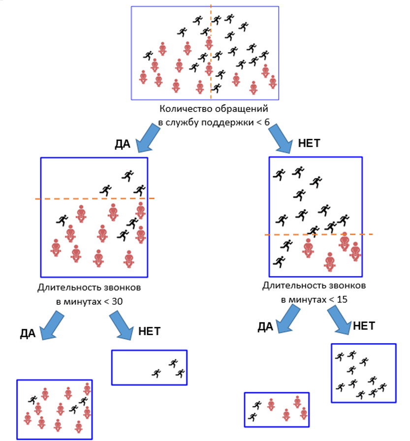
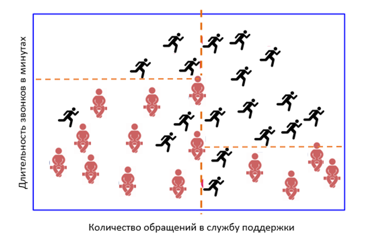
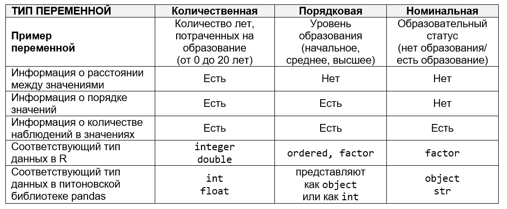
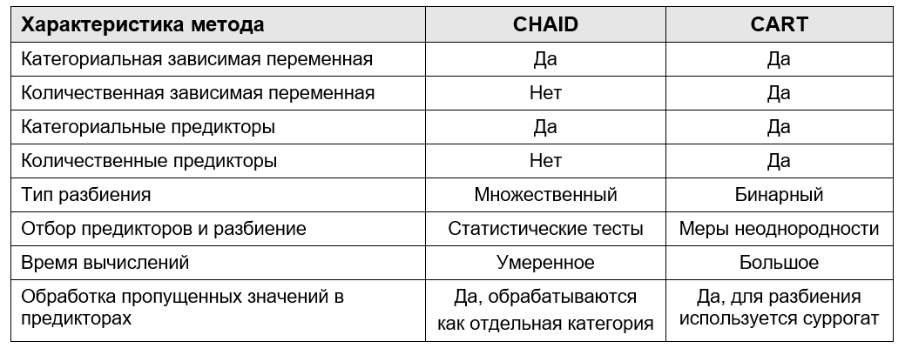
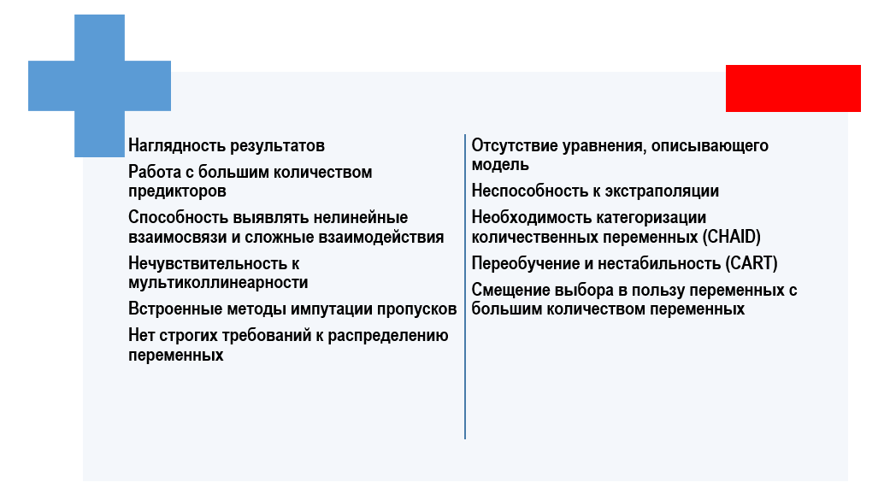

1 Введение в метод деревьев решений
1.1 Введение в методологию деревьев решений
Как и регрессионный анализ, деревья решений являются методом изучения статистической взаимосвязи между одной зависимой переменной и несколькими независимыми (предикторными) переменными. При этом под зависимой переменной понимается переменная, «поведение» которой мы хотим предсказать, а под предикторами подразумеваются переменные, которые помогают нам это сделать1. Базовое отличие метода деревьев решений от регрессионного анализа заключается в том, что взаимосвязь между значением зависимой переменной и значениями независимых переменных представлена не в виде общего прогнозного уравнения, а в виде древовидной структуры, которую получают с помощью иерархической сегментации данных.
Берется весь обучающий набор данных, называемый корневым узлом, и разбивается на два или более узлов (сегментов) так, чтобы наблюдения, попавшие в разные узлы, максимально отличались друг от друга по зависимой переменной (например, выделяем два узла с наибольшим и наименьшим процентом «плохих» заемщиков). В роли правил разбиения, максимизирующих эти различия, выступают значения независимых переменных (пол, возраст, доход и др.). Качество разбиения оценивается с помощью статистических критериев. Обычно оценка качества разбиения происходит в два этапа. На первом этапе по каждому предиктору осуществляется наилучшее правило разбиения, а на втором этапе из наилучших правил, найденных по каждому предиктору на первом этапе, выбирается самое лучшее. Правила отмечаются на ветвях – линиях, которые соединяют разбиваемый узел с узлами, полученными в результате разбиения. Для каждого узла вычисляются вероятности в виде процентных долей категорий зависимой переменной (если зависимая переменная является категориальной) или средние значения зависимой переменной (если зависимая переменная является количественной). В результате выносится решение – спрогнозированная категория зависимой переменной (если зависимая переменная является категориальной) или спрогнозированное среднее значение зависимой переменной (если зависимая переменная является количественной).
Аналогичным образом, каждый узел, получившийся в результате разбиения корневого узла, разбивается дальше на узлы, т.е. узлы внутри узла, и т.д. Этот процесс продолжается до тех пор, пока есть возможность создания новых узлов. Данный процесс сегментации называется рекурсивным разделением. Получившаяся иерархическая структура, характеризующая взаимосвязь между значением зависимой переменной и значениями независимых переменных, называется деревом.
Иногда для обозначения разбиваемого узла применяется термин родительский узел. Новые узлы, получившиеся в результате разбиения, называются дочерними узлами (или узлами-потомками). Когда впоследствии дочерний узел разбивается сам, он становится родительским узлом. Окончательные узлы, которые в дальнейшем не разбиваются, называются терминальными узлами (листьями) дерева. Лист представляет собой наилучшее окончательное решение, выдаваемое деревом. Здесь мы определяем группы клиентов, обладающие желаемыми характеристиками (например, тех, кто погасит кредит или откликнется на наше маркетинговое предложение).
В случае, когда вы прогнозируете вероятность значения категориальной зависимой переменной по соответствующим значениям предикторов, дерево решений называют деревом классификации (рис. 1.1). Например, дерево классификации строится для вычисления вероятности отклика у заемщика (на основе спрогнозированной вероятности мы относим его к неоткликнувшемуся – к классу 0 или к откликнувшемуся – классу 1). Если дерево решений используется для того, чтобы спрогнозировать среднее значение количественной зависимой переменной по соответствующим значениям предикторов, его называют деревом регрессии (рис. 1.2). Например, дерево регрессии строится, чтобы вычислить средний размер вклада у клиента.

Рис. 1.1. Дерево классификации (на примере пакета R rpart)

Рис. 1.2. Дерево регрессии (на примере пакета R rpart)
Если визуализировать работу алгоритма дерева решений, то мы увидим, что алгоритм последовательно разбивает данные на прямоугольники, параллельные осям координат. Проиллюстрируем это на примере бинарного дерева решений, то есть случая, когда узел-родитель может иметь только два узла-потомка.
У нас есть набор данных, состоящий из 32 наблюдений, предикторами являются переменные Длительность звонков в минутах и Количество обращений в службу поддержки, зависимая переменная – Статус клиента: 18 клиентов относятся к классу Ушедший, а 14 – к классу Оставшийся.

Рис. 1.3. Визуальное представление набора данных
Первое разбиение набора данных происходит по предиктору Количество обращений в службу поддержки.

Рис. 1.4. Разбиение набора данных по предиктору Количество обращений в службу поддержки
Затем каждый из полученных узлов разбивается по предиктору Длительность звонков в минутах, и дерево останавливается в росте.

Рис. 1.5. Процесс последовательного разбиения набора данных
Таким образом, можно сделать вывод: если клиент обращался в службу поддержки 6 раз и более и при этом делал звонки длительностью 15 минут и более, его можно отнести к классу ушедших клиентов. Вполне возможно, что постоянно возникающие проблемы в оказании услуг (об этом свидетельствует факт частого обращения в службу поддержки) при высокой интенсивности использования сотового телефона стали причиной оттока. Ниже приводится рис. 1.6, на котором показаны все границы принятия решений, предложенные деревом для нашего набора данных.

Рис. 1.6. Границы принятия решений, предложенные деревом
Обратите внимание, что деревья решений применяют различные критерии для отбора предикторов и разбиения узлов в зависимости от шкалы зависимой и независимых переменных2. Поэтому важно задать правильные шкалы для всех переменных. В R переменные могут иметь три типа шкалы: количественную, порядковую и номинальную. Подготовку данных в Python мы будем выполнять с помощью библиотеки pandas, в которой переменные могут иметь два типа шкалы: количественную и категориальную.
Количественная шкала допускает возможность сравнения значений: мы можем узнать, на сколько и во сколько раз одно значение больше/меньше другого, при этом второй тип сравнения не всегда возможен. Среди количественных шкал выделяют шкалу интервалов, шкалу отношений и абсолютную шкалу. Шкала интервалов состоит из одинаковых интервалов и имеет условную нулевую точку (точку отсчета). Она позволяет сказать, насколько одно значение больше другого, но не позволяет сказать, во сколько раз оно больше. Например, повысив температуру с 1°C до 20°C, мы можем сказать, что температура 20°C на 19 градусов Цельсия больше 1°C, но не можем сказать, что температура 20°C в 20 раз больше, чем 1°C. Из школьного курса физики вспомним, что температура среды (например, воздуха) определяется энергией молекул, составляющих эту среду. Для идеального газа внутренняя энергия равна сумме кинетических энергий его молекул, которая, в свою очередь, пропорциональна абсолютной температуре в кельвинах. Очевидно, что, например, при «двадцатикратном» нагреве с 1°C до 20°C абсолютная температура изменится всего в (273 + 20) / (273 + 1) = 1,069 раза. Ноль по шкале Цельсия условен и соответствует 273К. Шкала отношений отличается от шкалы интервалов тем, что имеет естественную нулевую точку. Она позволяет сказать, насколько одно значение больше другого и во сколько раз оно больше. Примером шкалы отношений может служить переменная Возраст: мы знаем, что расстояние между 25 и 30 в два раза меньше, чем расстояние между 30 и 40, 30-летний на 5 лет старше 25-летнего. Шкалы большинства физических величин (длина, масса, сила, давление, скорость и др.) являются шкалами отношений. При этом единица измерения в этих шкалах может быть произвольной. Например, возраст можно измерять в годах, месяцах, неделях. Длину мы можем измерять в километрах, милях, лье. Абсолютная шкала помимо естественной нулевой точки имеет еще и естественную общепринятую единицу измерения. Пример абсолютной шкалы – абсолютная шкала температуры или шкала Кельвина. Нуль этой шкалы отвечает полному прекращению движения молекул, т.е. самой низкой температуре, а единицей измерения является кельвин, который равен 1/273,16 части термодинамической температуры тройной точки воды. Как и шкала отношений, абсолютная шкала также позволяет сказать, насколько одно значение больше другого и во сколько раз оно больше.
При работе с количественными шкалами мы можем упорядочить значения по нарастанию или убыванию интенсивности определенного признака (например, по увеличению возраста): после 25 следует 30 и 30-летний старше 25-летнего. Наконец, мы можем сказать, сколько в выборке человек с тем или иным значением возраста.
В R количественным переменным соответствуют векторы типа double, когда значения представлены в виде чисел с плавающей точкой, например, доход клиента составляет 36500.60 рублей (такие векторы еще называют числовыми), и векторы типа integer, когда значения представлены в виде целых чисел, например, доход клиента составляет 36000 рублей (такие векторы еще называют целочисленными). Числовые и целочисленные векторы относятся к классу numeric. В питоновской библиотеке pandas количественным переменным будут соответствовать переменные типа float (аналог векторов типа double в R) и переменные типа int (аналог векторов типа integer в R).
Для порядковой шкалы задан лишь порядок или ранжирование значений. Допускаются сравнения между значениями, но нельзя сказать, на сколько или во сколько раз одно значение больше другого. Пример предиктора с порядковой шкалой – переменная Доход, принимающая значения низкий, средний, высокий. Здесь уже нельзя утверждать, что расстояние между значениями низкий и средний больше или меньше в определенное количество раз расстояния между значениями средний и высокий. Мы не можем утверждать, что человек со средним доходом на n-ное количество единиц богаче, чем человек с низким доходом. Однако можно упорядочить значения по нарастанию или убыванию интенсивности определенного признака: сначала следует значение низкий, затем значение средний и потом значение высокий. Респонденты, относящиеся к значению средний, обладают меньшим доходом по сравнению с респондентами, относящимися к значению высокий, то есть демонстрируют меньшую интенсивность признака. Также мы можем сказать, сколько в выборке человек с тем или иным уровнем дохода.
В R порядковым переменным соответствуют векторы, относящиеся одновременно к типам ordered и factor (наборы упорядоченных числовых кодов, предназначенных для хранения строковых значений). Их называют упорядоченными факторами. В питоновской библиотеке pandas для порядковой переменной не предусмотрено отдельного типа, поэтому такие переменные представляют как переменные типа int или переменные типа object.
Номинальная шкала содержит только информацию о количестве объектов в значениях. Пример предиктора с номинальной шкалой – переменная Регион, который имеет уровни Алтайский край, Новосибирская область, Красноярский край, Кемеровская область. Мы ничего не можем сказать о расстояниях между значениями или о порядке значений. Мы можем лишь судить о количестве респондентов, проживающих в каждом регионе.
В R номинальным переменным соответствуют векторы типа factor (наборы неупорядоченных числовых кодов, предназначенных для хранения строковых значений). В библиотеке pandas номинальным переменным будут соответствовать переменные типа object; также для этого можно использовать тип str.

Рис. 1.7. Три типа шкал
1.2 Краткий обзор методов деревьев решений CHAID и CART
В настоящее время наиболее распространенными методами деревьев решений являются CHAID и CART.
CHAID (Chi-square Automatic Interaction Detector – автоматический обнаружитель взаимодействий) был разработан Гордоном Каасом в 1980 году и представляет собой метод на основе дерева решений, который исследует взаимосвязь между предикторами и зависимой переменной с помощью статистических тестов.
Каждый раз для разбиения узла выбирается предиктор, сильнее всего взаимодействующий с зависимой переменной. Перед этим категории каждого предиктора объединяются, если они не имеют между собой статистически значимых отличий по отношению к зависимой переменной. Категории, которые дают значимые отличия по зависимой переменной, рассматриваются как отдельные. Зависимая переменная может быть измерена в категориальной шкале. Предикторы могут быть только категориальными переменными (количественные переменные должны быть предварительно преобразованы в категориальные с помощью биннинга).
CHAID позволяет осуществлять многомерные расщепления узлов. Каждый узел при разбиении может иметь более 2 потомков, поэтому CHAID имеет тенденцию выращивать более раскидистые деревья, чем бинарные методы. Вместе с тем из-за жестких статистических критериев расщепления нередко дерево CHAID получается нереалистично коротким и тривиальным («грубое» дерево), поэтому требуется тонкая настройка уровней значимости для объединения категорий и разбиения узлов. По сравнению с другими методами CHAID характеризуется умеренным временем вычислений.
Помимо прочего, метод CHAID обладает собственным способом обработки пропущенных значений. Пропуски рассматриваются как отдельная фактическая категория. В ряде случаев это имеет смысл. Например, отказ отвечать на вопрос о доходе или занятости может оказаться предсказательной категорией для зависимой переменной.
CART (Classification and Regression Tree – деревья классификации и регрессии) был разработан в 1974-1984 годах профессорами статистики Лео Брейманом (Калифорнийский университет в Беркли), Джеромом Фридманом (Стэнфордский университет), Ричардом Олшеном (Калифорнийский университет в Беркли) и Чарльзом Стоуном (Стэнфордский университет).
Для построения дерева метод CART использует меры неоднородности. Эти меры основаны на принципе уменьшения неоднородности в узле.
Каждый раз расщепление узла происходит так, чтобы узлы-потомки стали более однородными, чем его узел-родитель. В абсолютно однородном узле все наблюдения имеют одно и то же значение целевой переменной (все объекты принадлежат к одной и той же категории целевой переменной). Такой узел называют «чистым», и в нем мы получаем максимально однозначный прогноз.
Зависимая переменная и предикторы может быть категориальными или количественными.
CART позволяет выполнять только одномерные расщепления узлов. Каждый узел при разбиении может иметь только 2 потомков. Поэтому CART имеет тенденцию выращивать высокие деревья с большим количеством уровней.
Часто деревья CART получаются слишком детализированные, имеют много узлов и ветвей, сложны для интерпретации, при этом усложнение дерева не приводит к повышению прогностической способности дерева. Для упрощения структуры дерева и повышения качества модели в методе CART предусмотрена возможность отсечения ветвей (прунинг). Прунинг позволяет получить дерево «подходящего размера», избежать построения ветвистых, усложненных деревьев и при этом достичь лучшего качества модели.
Для обработки наблюдений, у которых пропущено значение в предикторе, используются суррогаты – другие предикторы, имеющие сильную корреляцию с исходной независимой переменной. Таким образом, разбиение, задаваемое суррогатом, будет наиболее близко к разбиению, задаваемому исходным предиктором, по которому имеются пропуски. Метод CART требует большее время вычислений по сравнению с другими методами.
Ниже на рис. 1.8 приводится таблица сходств и различий между методами CHAID и CART.

Рис. 1.8. Отличие методов CHAID и CART
1.3 Преимущества и недостатки деревьев решений
Метод деревьев решений обладает рядом преимуществ. Главное из них – это наглядность представления результатов (в виде иерархической структуры дерева). Деревья решений позволяют работать с большим числом независимых переменных. На вход можно подавать все существующие переменные, алгоритм сам выберет наиболее значимые среди них, и только они будут использованы для построения дерева (автоматический отбор предикторов). Однако при этом для некоторых методов (например, для CHAID) может потребоваться категоризация количественных предикторов, при которой теряется часть содержащейся в ней информации.
Деревья решений бывают более эффективны по сравнению с линейными моделями в тех случаях, когда взаимосвязи между предикторами и зависимой переменной является нелинейными, наблюдается большое количество коррелирующих между собой переменных, присутствуют взаимодействия высоких порядков. Это обусловлено тем, что деревья пытаются описать связь между переменными путем многократных разбиений по предикторам. CHAID делает это за счет расщепления сразу на несколько категорий, CART пытается уловить эту связь посредством серии бинарных делений, и это может быть менее эффективно по сравнению с подбором параметров в линейных моделях.
Деревья решений устойчивы к выбросам, поскольку разбиения основаны на количестве наблюдений внутри диапазонов значений, выбранных для расщепления, а не на абсолютных значениях. Например, если у нас есть наблюдение со значением 99999, дерево может создать два узла с правилами «<5» и «>5» и отнести наблюдение со значением 99999 в правый узел.
Деревья решений относительно нечувствительны к наличию мультиколлинеарности (сильной корреляции между предикторами), в то время как линейным моделям в подобной ситуации понадобится правильно подобранная регуляризация.
Перед построением модели не обязательно импутировать пропущенные значения, поскольку, как уже говорилось выше, деревья используют собственные процедуры обработки пропусков. Требования, выдвигаемые методом деревьев решений к распределению переменных, не являются строгими.
Теперь о недостатках3. Для деревьев решений нельзя получить простое общее прогнозное уравнение, выражающего модель (в отличие от линейных моделей).
Еще одним недостатком можно считать принципиальную неспособность деревьев выполнять экстраполяцию при решении задачи регрессии: предсказание для любой комбинации предикторов всегда будет средним значением в одном из листьев, т.е. за пределы диапазона значений целевой переменной в обучающей выборки выйти невозможно. Линейная модель, наоборот, может дать осмысленный прогноз (хотя качество этого прогноза не гарантируется – модели машинного обучения ведут предсказуемо себя в той области значений предикторов и целевой переменной, которые модель «видела» на этапе обучения).
Деревьям решений свойственно переобучение. Речь идет о ситуации, когда дерево в силу гибкости используемого алгоритма получается слишком детализированным, имеют много узлов и ветвей, сложно для интерпретации, что требует специальной процедуры отсечения. Небольшие изменения в наборе данных могут приводить к построению совершенно другого дерева, потому что в силу иерархичности дерева изменения в верхних узлах ведут к изменениям во всех узлах, расположенных ниже.
Отметим, что в большей степени проблемы переобучения и нестабильности относится к методу CART (в CHAID эти проблемы во многом снимаются за счет использования строгих статистических критериев). Предпринимая попытки улучшить прогностическую способность и стабильность метода CART, один из его разработчиков Лео Брейман пришел к идее случайного леса, когда из обучающего набора извлекаются случайные выборки (того же объема, что и исходный обучающий набор) с возвращением, по каждой строится дерево с использованием случайно отобранных предикторов и затем результаты, полученные по каждому дереву, усредняются. Однако при таком подходе теряется главное преимущество деревьев решений – простота интерпретации.
Наконец, для методов одиночных деревьев характерна проблема множественных сравнений. Перед расщеплением узла дерево сравнивает различные варианты разбиения, число этих вариантов зависит от числа уровней предикторов, поэтому, как правило, происходит смещение выбора в пользу переменных, у которых большее количество уровней.

Рис. 1.9. Преимущества и недостатки деревьев решений
1.4 Задачи, выполняемые с помощью деревьев решений
Деревья применяются для задач регрессии и классификации в различных областях – от банковской сферы до медицины. Также они могут быть использованы, например, сегментации клиентской базы: определив, какие демографические группы имеют максимальный показатель отклика, мы можем использовать эту информацию, чтобы максимизировать отклик при будущей прямой рассылке.
Здесь необходимо отметить, что в настоящее время дерево решений CART все реже используется для построения самостоятельной прогнозной модели в силу вышеописанных недостатков, а построение модели на основе дерева CHAID должно сопровождаться тщательно подготовленными процедурами проверки. Часто дерево решений CHAID используют в ансамбле с логистической регрессией. Например, ансамбли дерева решений CHAID и логистической регрессии используются в моделях оттока в телекоме, что позволяет поднять качество модели, при этом, в отличие от случайного леса и градиентного бустинга, такой ансамбль легко интерпретируем.
В банковском скоринге деревья решений используются как вспомогательный инструмент при разработке модели логистической регрессии. Приведем конкретные примеры такого применения дерева.
В кредитном скоринге использование нескольких скоринговых карт для одного портфеля обеспечивает лучшее дифференцирование риска, чем использование одной скоринговой карты. Это характерно, когда нам приходится работать с разнородной аудиторией, состоящей из различных групп, и одна и та же скоринговая карта не может работать достаточно эффективно для всех. Например, в скоринге кредитных карточек выделяют сегменты «активные клиенты» и «неактивные клиенты», «клиенты в просрочке» и «клиенты, не имеющие просрочек». Переменные в таких сегментах будут сильно различаться. Например, для активных кредитных карт утилизация будет сильной переменной, а для неактивных – слабой. И, наоборот, может оказаться, что время неактивности для активных клиентов равно 0, а для неактивных клиентов время неактивности окажется сильной переменной. Для этих целей выполняют сегментацию клиентов. Первый способ сегментации – деление на группы на основе опыта и отраслевых знаний с последующей аналитической проверкой. Второй способ – это сегментация с помощью статистических методов типа кластерного анализа или деревьев решений. При этом по сравнению с кластерным анализом деревья решений обладают преимуществом: они формулируют четкие правила выделения сегментов. В дальнейшем для каждого из сегментов можно построить собственную модель логистической регрессии, разработать скоринговую карту и сформулировать кредитные правила. В Citibank USA является стандартной практикой делать дерево с двумя-тремя уровнями и в каждом узле подгонять свою модель логистической регрессии. В основе скорингового балла FICO также лежит сегментация на основе деревьев решений. Об эффективности использования сегментации в кредитном скоринге пишет в своей книге «Скоринговые карты для оценки кредитных рисков» известный эксперт по управления рисками Наим Сиддики4, а также один из разработчиков алгоритмов скоринга компании FICO Брюс Ходли5.
С помощью деревьев решений из большого числа предикторов можно выбрать переменные, полезные для построения модели логистической регрессии). Например, из 100 переменных дерево включило в модель 25 переменных, таким образом, у нас появляется информация о том, какие переменные наверняка можно включить в модель логистической регрессии. Методы CART и случайный лес позволяют вычислить важность переменных, использованных в модели, благодаря чему мы можем ранжировать переменные по степени полезности.
Деревья решений можно использовать для биннинга – перегруппировки категориального предиктора или дискретизации количественного предиктора с целью лучшего описания взаимосвязи с зависимой переменной. Например, при построении модели логистической регрессии часто обнаруживается, что взаимосвязи между количественным предиктором и интересующим событием являются нелинейными. Уравнение логистической регрессии, несмотря на нелинейное преобразование своего выходного значения (логит-преобразование), все равно моделирует линейные зависимости между предикторами и зависимой переменной. Возьмем пример нелинейной зависимости между стажем работы в банке и внутренним мошенничеством. Допустим, рассчитанный регрессионный коэффициент в уравнении логистической регрессии получился отрицательным. Это значит, что вероятность совершения внутреннего мошенничества с увеличением стажа работы уменьшается. Однако, после выполнения разбивки переменной с помощью дерева CHAID на категории до 12 месяцев, от 12 до 36 месяцев, от 36 до 60 месяцев и больше 60 месяцев, стало видно, что зависимость между стажем и внутренним мошенничеством нелинейная. Первая (до 12 месяцев) и последняя (больше 60 месяцев) категории склонны к внутреннему мошенничеству, а промежуточные сегменты, наоборот, не склонны к внутреннему мошенничеству. После правильной разбивки переменной, проведенной с помощью дерева, связь между предиктором и зависимой переменной становится больше похожа на реальную.
Строя модель логистической регрессии, нередко приходится работать с предикторами, у которых большое количество категорий. Как правило, речь идет о географических переменных (регион, область регистрации, область фактического пребывания заемщика, область торговой точки, где клиент брал кредит) и переменных, фиксирующих профессию или сферу занятости заемщика. При этом некоторые категории могут быть редкими и либо станут источником шума, либо вообще вызовут проблемы моделирования (когда наблюдения, относящиеся к редкой категории, не попадут в обучающую выборку, но встретятся в контрольной). Исключение таких переменных из анализа также нерационально, поскольку они могут дать ценную информацию. Поэтому можно выполнить биннинг с целью укрупнения категорий, а можно построить по такой переменной дерево решений. В результате дерево укрупнит категории переменных и скомбинирует переменные так, чтобы полученные комбинации характеристик максимизировали различия по зависимой переменной. Такую переменную, где категориями являются терминальные узлы дерева, можно включить в модель логистической регрессии.
Поэтому зависимую переменную еще называют объясняемой переменной, а предикторы – объясняющими переменными. Кроме того, в качестве синонима «зависимая переменная» могут использоваться термины «целевая переменная», «результирующая переменная», «отклик», «выходная переменная». Предикторы также называют факторами, входными переменными.↩︎
Подробнее о шкалах см., например, по ссылке http://www.aiportal.ru/articles/autoclassification/type-scales.html.↩︎
Более подробное обсуждение этой темы можно найти по ссылке https://stats.stackexchange.com/questions/1292/what-is-the-weak-side-of-decision-trees↩︎
Наим Сиддики. Скоринговые карты для оценки кредитных рисков. М.: Манн, Иванов и Фабер, 2014.↩︎
Breiman, L. 2001. Arcing classifiers (with discussion). The Annals of Statistics, vol.26, no. 3, 801–849. 2001b. Statistical modeling: The two cultures (with rejoinders). Statistical Science, vol. 16, no. 3, 199–231.↩︎